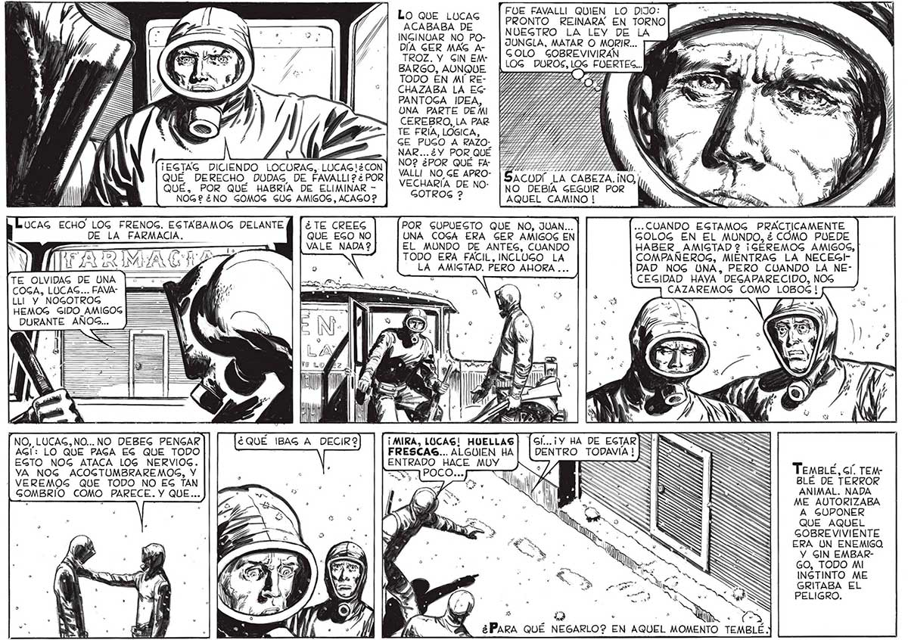

56 FOE FAVALLI QUIEN LO DiJo: | Lo QUE LUCAS [PRONTO REINARA EN TORNO ACABABA DE NUEGTRO LA LEY DE LA INGINOAR NO PO- > E 2 97 | JUNGLA, MATAR O MORIR... 14 DÍA GER MAG A ; 4, - |coLO GOBREVIVIRAN — ké TROZ. Y EN EN | BARGO, AUNQUE | uROS, TODO EN MÍ RECHAZABA LA EG PANTOGA IDEA, UNA PARTE DEMI CEREBRO, LA PAR TE FRÍA, LÓGICA, GE PUGO A RAZO: | | NAR... ¿Y PORQUÉ ¡EGTAG DICIENDO LOCURAG, LUCAGIECON] iO odo QUÉ DERECHO, DUDAS, DE FAVALLIP¿POR| ecu pe o, QUÉ, POR QUÉ HABRÍA DE ELIMINAR - A +A NOG2 ¿NO GOMOG GUG AMIGOS, ACAGO? : AQUEL CAMINO ! UCAG ECHO LOG FRENOG. ESTABAMOG DELANTE ¿TE CREEG | POR GUPUEGTO QUE NO, JUAN... | ... CUANDO EGTAMOG PRACTICAMENTE DE LA FARMACIA. QUE EGO NO UNA COGA ERA GER AMIGOS EN GOLOG EN EL MUNDO, ¿ CÓMO PUEDE : — VALE NADA 2 EL MUNDO DE ANTES, CUANDO =— E HABER_AMIGTAD 2 ¡GÉREMOG AMIGOS, RIMAS | TODO ERA FACIL, INCLUGO LA COMPAÑEROG, MIÉNTRAG LA NECEGIALAN Y | LA AMIGTAD. PERO AHORA ... DAD NOG UNA, PERO CUANDO LA NETE OLVIDAG DE UNA SY / : 7 | CEGIDAD HAYA DEGAPARECIDO, NOG COGA, LUCAS... FAVA- ¡ y CAZAREMOG COMO LOBOG! LLI Y NOGOTROG a HEMOG GIDO_AMIGOG DURANTE AÑOS... a ma > E Y e) a ( LETS ¡MIRA, LUCAS! HUELLAS | [6f...¡Y HA DE EGTAR FRESCAS... ALGUIEN HA| | DENTRO TODAVÍA ! ENTRADO HACE MUY == C ' y cen NN > NO, LUCAG,NO... NO DEBEG PENGAR AG!: LO QUE PAGA EG QUE TODO EGTO NOG ATACA LOG NERVIOG. YA NOG ACOGTUMBRAREMOG, Y | VEREMOS QUE TODO NO EG TAN GOMBRIO COMO PARECE. Y QUE... TEMBLÉ, Gl. TEMBLÉ DE TERROR ANIMAL. NADA ME AUTORIZABA A GUPONER QUE AQUEL GOBRE VIVIENTE ERA UN ENEMIGO Y GIN EMBARGO, TODO MI INSTINTO ME GRITABA EL PELIGRO. e P .. j M ¿PARA QUÉ NEGARLO? EN AQUEL MOMENTO TEMB
